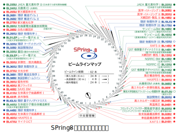
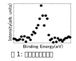
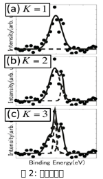

Projects
- SPring-8全ビームラインベイズ化計画ベイズ計測を国内外に浸透させるには，我々が単に研究を進めるだけでなく，データ駆動科学のロールモデルを世に提案することが重要である．そのためにもデータ駆動科学の水平展開が重要であり，大型放射光施設であるSPring-8への展開を考えた．SPring-8はアメリカのAdvanced Photon Source (APS)，ヨーロッパのEuropean Synchrotron Radiatio Facility(ESRF)とならんで世界3大規模放射光施設の中の一つである．理研はSPring-8を「データ創出基盤」であると言っている．それは，まさにそのとおりであり，日々全国の研究者がデータを「創出」している．年間延べ1万人が利用しており，IoT(Internet of Things)で得られるデータとは「質」の異なるデータが日々得られている．特に自然科学系のデータが創出されているデータの宝庫であるSPring-8を利用しない手はない．自然科学系全般の研究者が SPring-8に来ているので，さまざまな分野に対して水平展開する意義は大きく，データ解析の概念の革新をはかれる．
- 複雑理工学専攻でのデータ駆動科学の水平展開 データ駆動科学の核融合グループとアストロバイオロジーグループへの水平展開を行なっている．まずその皮切りとして，分光学を取り上げた．分光学はスケールや対象を超えて広く使われており，マルチスケールを取り扱う複雑理工でのデータ駆動科学の水平展開にうってつけの題材である．
分光学でデータ駆動科学の水平展開が可能になるのは以下の理由による．我々は2012年に，図1のような多峰性スペクトルをガウス関数のような単峰性の基底関数の線形和に分解するスペクトル分解にベイズ推論を適用した．スペクトル分解では，基底関数の個数Kをいかに決めるかが重要な問題である．図2(a)のK=1のようにKが小さすぎると観測データを再現できない．図2(b), (c)のように，Kを大きくするとデータの再現性は良くなるが，Kを大きくしすぎると観測ノイズを再現するために余分な基底関数を用いてしまう．このようにKに関するトレードオフがあり，最適なKが存在することがわかる．この最適なKを選ぶことを統計学ではモデル選択とよぶ．
スペクトル分解の誤差関数は局所解を持ち，従来手法の最急降下法では局所解を回避できない．また，最急降下法ではモデル選択の問題を取り扱うことはできない．そこで我々はこの問題にベイズ推論を適用した．我々はレプリカ交換モンテカルロ法を用いることにより，局所解の問題を解決することができる．またベイズ計測では確率モデルでデータ生成の過程をモデル化しているので，モデル選択の問題も取り扱うことができる．
スペクトル分解の数理構造を考察すると，この枠組みは単にスペクトル分解だけに適用できる枠組みではなく，他の分光学の解析に用いることができることがわかる．
- 理論神経科学/計算論的神経科学/脳型人工知能
視覚野を中心とし神経活動データを解析すると共に，その知見を用いて神経回路モデルを構築することで，脳神経系の情報処理原理を解明および，得られた知見を次世代脳型人工知能の設計原理つなげる． 近年のAIブームのきっかけとなった深層畳み込みニューラルネットワーク(DCNN: Deep Convolutional Neural Network)の基本原理は, 1960年代初頭に得られた脳の視覚一次野(V1: Visual 1)に関するHubelとWieselの知見に基づいている．Hubel Wieselから60年，その間にえられた神経科学的な知見が，新たな人工知能の設計指針になりうる可能性があることを否定できる人はだれもいない．この骨太な方針のもと，DCNNと実際の脳の視覚野を比較した．その結果，脳の視覚野の最後にある側頭葉のニューロンの挙動が，DCNNでは説明できないことがわかった．そこで我々は，この知見をもとに，新たな視覚野のモデルを構築した．さらに現在，このモデルが実際の側頭葉のニューロンの挙動を説明できるかを，電気生理学実験を用いて検証中である．
Publications
業績一覧Awards
新領域創成科学研究科長賞受賞
修士課程(2004年7月1日着任以降 5名)
2008年3月 大泉 匡史
2010年3月 瀧山 健
2012年3月 関口 智樹
2013年3月 中西（大野）義典
2015年3月 竹中 光
受賞率 5/10=50%
博士課程(2004年7月1日着任以降3名)
2011年3月 大泉 匡史
2014年3月 瀧山 健
2016年3月 中西（大野）義典
受賞率 3/9=33%
学会での受賞
久住太一 Microscopy and Microanalysis 2024 Student Scholar Award唐木田亮 IBIS2015 学生最優秀プレゼンテーション賞
徳田悟 ImPACT未来開拓研究会 ベストポスター賞
徳田悟 2015年度物性若手夏の学校 分科会最優秀発表者 (分野A)
徳田悟 2015年度人工知能学会 全国大会優秀賞 (口頭発表部門／インタラクティブ発表部門)
唐木田亮 2014年度IEEE CIS Japan Chapter Young Researcher Award
唐木田亮 日本神経回路学会大会奨励賞 日本神経回路学会第24回全国大会 (JNNS2014)
徳田悟 2013年度IEEE CIS Japan Chapter Young Researcher Award
寺島裕貴 人工知能学会全国大会学生奨励賞 第27回人工知能学会全国大会(JSAI2013)
永田賢二 2011年度IEEE CIS Japan Chapter Young Researcher Award
大坪洋介 2011年度IEEE CIS Japan Chapter Young Researcher Award
桑谷立 2011年度IEEE CIS Japan Chapter Young Researcher Award
寺島裕貴 日本神経回路学会大会奨励賞 日本神経回路学会第21回全国大会 (JNNS2011)
永田賢二 情報論的学習理論ワークショップ(IBIS2011)ポスター奨励賞
Ryota Hasegawa,Masato Okada and Seiji Miyoshi,
Journal of the Physical Society of Japan Papers of Editors' Choice (2011)寺島裕貴 人工知能学会全国大会優秀賞(口頭発表部門) 第25回人工知能学会全国大会 (JSAI2011)
瀧山健 第五回Motor Control研究会優秀発表賞
飯田宗徳 大森敏明 青西亨 岡田真人 情報処理学会 平成22年度 情報処理学会論文誌 数理モデル化と応用 優秀論文賞
寺島裕貴 SNSS2011 Data Analysis Challenge Award システム神経生物学スプリングスクール 2011 (SNSS2011)
寺島裕貴 Organization for Computational Neuroscience Student Travel Award 19th Annual Computational Neuroscience Meeting (CNS*2010)
大森敏明 計測自動制御学会 生体・生理工学部会 研究奨励賞
飯田宗徳 情報処理学会 平成22年度山下記念研究賞
飯田宗徳 情報処理学会 数理モデル化と問題解決研究会賞プレゼンテーション賞 2010
清水裕一郎 情報処理学会 数理モデル化と問題解決研究会賞プレゼンテーション賞 2010
瀧山健 2009年度IEEE CIS Japan Chapter Young Researcher Award
瀧山健 日本神経回路学会2009年度全国大会 大会奨励賞
大坪洋介 日本神経回路学会2009年度全国大会 大会奨励賞
Kazuho Watanabe,Shotaro Akaho,Shinichiro Omachi and Masato Okada
The German Classification Society - Method Award, 33rd Annual Conference of the GfKI, March 13th, 2009.大泉匡史 2008年度日本神経回路学会 研究賞
大泉匡史 2007年度IEEE CIS Japan Chapter Young Researcher Award
鈴木正 2007年度日本物理学会 若手奨励賞
大泉匡史 2006年度日本神経回路学会 奨励賞
三浦佳二 Neural Information Processing System Conference Outstanding Student Paper Awards (2005)
三浦佳二 2005年度日本神経回路学会 研究賞
- 理論神経科学/計算論的神経科学/脳型人工知能